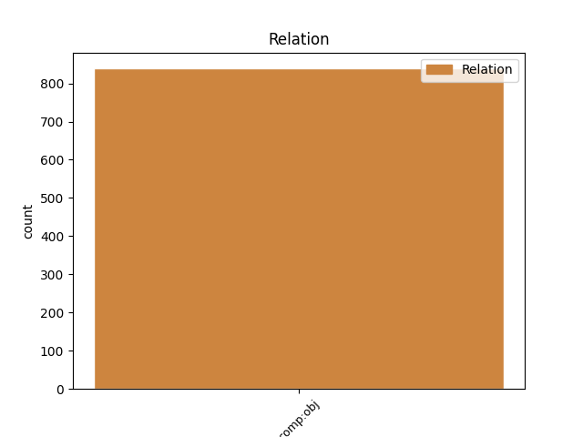
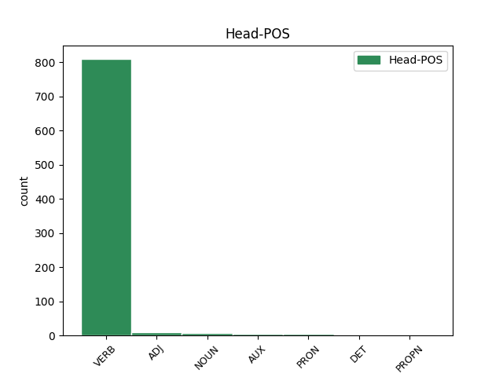
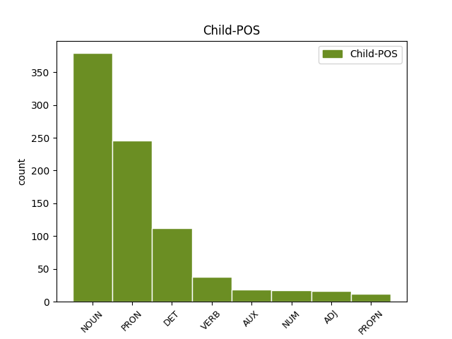

Distribution of features within this leaf



Agreement Rules sorted by frequency.
- When the dependent token is the direct object complements(comp:obj) of the head token, and the dependent token is NOUN.
1 reklamo reklama NOUN Ncfsa Case=Acc|Gender=Fem|Number=Sing 3 comp:obj _ msd=Sozet|word=reklamo
2 sem _ _ _ _ 0 _ _ _
3 videla videti VERB Vmbp-sf Gender=Fem|Number=Sing|VerbForm=Part 0 _ _ _
4 nisem _ _ _ _ 0 _ _ _
5 pa _ _ _ _ 0 _ _ _
6 še _ _ _ _ 0 _ _ _
7 pila _ _ _ _ 0 _ _ _
1 [gap] _ _ _ _ 0 _ _ _
2 ga on PRON Pp3msa--y Case=Acc|Gender=Masc|Number=Sing|Person=3|PronType=Prs|Variant=Short 3 comp:obj _ msd=Zotmet--k|word=ga
3 ima imeti VERB Vmpr3s-n Aspect=Imp|Mood=Ind|Number=Sing|Person=3|Polarity=Pos|Tense=Pres|VerbForm=Fin 0 _ _ _
4 takrat _ _ _ _ 0 _ _ _
5 [speaker:laughter] _ _ _ _ 0 _ _ _
1 aha _ _ _ _ 0 _ _ _
2 kul _ _ _ _ 0 _ _ _
3 eee _ _ _ _ 0 _ _ _
4 čakaj _ _ _ _ 0 _ _ _
5 še _ _ _ _ 0 _ _ _
6 kako _ _ _ _ 0 _ _ _
7 vprašanje _ _ _ _ 0 _ _ _
8 eee _ _ _ _ 0 _ _ _
9 to _ _ _ _ 0 _ _ _
10 pa _ _ _ _ 0 _ _ _
11 eee _ _ _ _ 0 _ _ _
12 če _ _ _ _ 0 _ _ _
13 če _ _ _ _ 0 _ _ _
14 nabavim _ _ _ _ 0 _ _ _
15 to _ _ _ _ 0 _ _ _
16 imate _ _ _ _ 0 _ _ _
17 k _ _ _ _ 0 _ _ _
18 [gap] _ _ _ _ 0 _ _ _
19 kako _ _ _ _ 0 _ _ _
20 je _ _ _ _ 0 _ _ _
21 tako _ _ _ _ 0 _ _ _
22 zdaj _ _ _ _ 0 _ _ _
23 ena _ _ _ _ 0 _ _ _
24 cena _ _ _ _ 0 _ _ _
25 za _ _ _ _ 0 _ _ _
26 en _ _ _ _ 0 _ _ _
27 mesec _ _ _ _ 0 _ _ _
28 če _ _ _ _ 0 _ _ _
29 bi _ _ _ _ 0 _ _ _
30 jaz _ _ _ _ 0 _ _ _
31 to ta DET Pd-nsa Case=Acc|Gender=Neut|Number=Sing|PronType=Dem 32 comp:obj _ msd=Zk-set|word=to
32 hotel hoteti VERB Vmpp-sm Aspect=Imp|Gender=Masc|Number=Sing|VerbForm=Part 0 _ _ _
33 pač _ _ _ _ 0 _ _ _
34 en _ _ _ _ 0 _ _ _
35 mesec _ _ _ _ 0 _ _ _
36 hotel _ _ _ _ 0 _ _ _
37 to _ _ _ _ 0 _ _ _
38 jest _ _ _ _ 0 _ _ _
39 ? _ _ _ _ 0 _ _ _
1 sicer _ _ _ _ 0 _ _ _
2 imate _ _ _ _ 0 _ _ _
3 najbrž _ _ _ _ 0 _ _ _
4 na _ _ _ _ 0 _ _ _
5 spletni _ _ _ _ 0 _ _ _
6 strani _ _ _ _ 0 _ _ _
7 napisano napisan ADJ Appfsa Case=Acc|Degree=Pos|Gender=Fem|Number=Sing|VerbForm=Part 0 _ _ _
8 kdaj _ _ _ _ 0 _ _ _
9 in _ _ _ _ 0 _ _ _
10 kje _ _ _ _ 0 _ _ _
11 se _ _ _ _ 0 _ _ _
12 vas _ _ _ _ 0 _ _ _
13 da dati VERB Vmer3s Aspect=Perf|Mood=Ind|Number=Sing|Person=3|Tense=Pres|VerbForm=Fin 7 comp:obj _ msd=Ggdste|word=da
14 ujeti _ _ _ _ 0 _ _ _
15 v _ _ _ _ 0 _ _ _
16 živo _ _ _ _ 0 _ _ _
17 ne _ _ _ _ 0 _ _ _
1 takrat _ _ _ _ 0 _ _ _
2 ko _ _ _ _ 0 _ _ _
3 sem _ _ _ _ 0 _ _ _
4 … _ _ _ _ 0 _ _ _
5 no _ _ _ _ 0 _ _ _
6 pa _ _ _ _ 0 _ _ _
7 ko _ _ _ _ 0 _ _ _
8 ste _ _ _ _ 0 _ _ _
9 imeli _ _ _ _ 0 _ _ _
10 birmo _ _ _ _ 0 _ _ _
11 je _ _ _ _ 0 _ _ _
12 [name:personal] _ _ _ _ 0 _ _ _
13 ali _ _ _ _ 0 _ _ _
14 pa _ _ _ _ 0 _ _ _
15 [name:personal] _ _ _ _ 0 _ _ _
16 sta _ _ _ _ 0 _ _ _
17 berilo _ _ _ _ 0 _ _ _
18 brala _ _ _ _ 0 _ _ _
19 no _ _ _ _ 0 _ _ _
20 pa _ _ _ _ 0 _ _ _
21 nima _ _ _ _ 0 _ _ _
22 veze _ _ _ _ 0 _ _ _
23 … _ _ _ _ 0 _ _ _
24 no _ _ _ _ 0 _ _ _
25 njihov _ _ _ _ 0 _ _ _
26 tudi _ _ _ _ 0 _ _ _
27 ni _ _ _ _ 0 _ _ _
28 nič _ _ _ _ 0 _ _ _
29 znal _ _ _ _ 0 _ _ _
30 pa _ _ _ _ 0 _ _ _
31 t _ _ _ _ 0 _ _ _
32 [gap] _ _ _ _ 0 _ _ _
33 je _ _ _ _ 0 _ _ _
34 tam _ _ _ _ 0 _ _ _
35 pa _ _ _ _ 0 _ _ _
36 veš vedeti VERB Vmpr2s Aspect=Imp|Mood=Ind|Number=Sing|Person=2|Tense=Pres|VerbForm=Fin 0 _ _ _
37 z _ _ _ _ 0 _ _ _
38 [gap] _ _ _ _ 0 _ _ _
39 zakaj _ _ _ _ 0 _ _ _
40 je biti AUX Va-r3s-n Mood=Ind|Number=Sing|Person=3|Polarity=Pos|Tense=Pres|VerbForm=Fin 36 comp:obj _ msd=Gp-ste-n|word=je
41 fajn _ _ _ _ 0 _ _ _
42 pa _ _ _ _ 0 _ _ _
43 rečeš _ _ _ _ 0 _ _ _
44 ob _ _ _ _ 0 _ _ _
45 enih _ _ _ _ 0 _ _ _
46 se _ _ _ _ 0 _ _ _
47 dobimo _ _ _ _ 0 _ _ _
48 pa _ _ _ _ 0 _ _ _
49 tlele _ _ _ _ 0 _ _ _
50 pri _ _ _ _ 0 _ _ _
51 tejle _ _ _ _ 0 _ _ _
52 koči _ _ _ _ 0 _ _ _
1 ja _ _ _ _ 0 _ _ _
2 kompleksna _ _ _ _ 0 _ _ _
3 so _ _ _ _ 0 _ _ _
4 eee _ _ _ _ 0 _ _ _
5 mislim _ _ _ _ 0 _ _ _
6 temeljna temeljen ADJ Agpnpa Case=Acc|Degree=Pos|Gender=Neut|Number=Plur 9 comp:obj _ msd=Ppnsmt|word=temeljna
7 seveda _ _ _ _ 0 _ _ _
8 lahko _ _ _ _ 0 _ _ _
9 pokažemo pokazati VERB Vmer1p Aspect=Perf|Mood=Ind|Number=Plur|Person=1|Tense=Pres|VerbForm=Fin 0 _ _ _
10 že _ _ _ _ 0 _ _ _
11 z _ _ _ _ 0 _ _ _
12 obrazno _ _ _ _ 0 _ _ _
13 mimiko _ _ _ _ 0 _ _ _
1 zdajle _ _ _ _ 0 _ _ _
2 gledam _ _ _ _ 0 _ _ _
3 si _ _ _ _ 0 _ _ _
4 že _ _ _ _ 0 _ _ _
5 pila piti VERB Vmpp-sf Aspect=Imp|Gender=Fem|Number=Sing|VerbForm=Part 0 _ _ _
6 eee _ _ _ _ 0 _ _ _
7 frutiq Frutiq PROPN Npmsan Animacy=Inan|Case=Acc|Gender=Masc|Number=Sing 5 comp:obj _ msd=Slmetn|word=Frutik
8 ? _ _ _ _ 0 _ _ _
9 [speaker:laughter] _ _ _ _ 0 _ _ _
1 eno en NUM Mlpnsn Case=Nom|Gender=Neut|Number=Sing|NumForm=Word|NumType=Card 4 comp:obj _ msd=Kbzsei|word=eno
2 je _ _ _ _ 0 _ _ _
3 že _ _ _ _ 0 _ _ _
4 izdala izdati VERB Vmep-sf Aspect=Perf|Gender=Fem|Number=Sing|VerbForm=Part 0 _ _ _
5 tisto _ _ _ _ 0 _ _ _
6 imam _ _ _ _ 0 _ _ _
7 tudi _ _ _ _ 0 _ _ _
8 doma _ _ _ _ 0 _ _ _
9 [name:address] _ _ _ _ 0 _ _ _
10 si _ _ _ _ 0 _ _ _
11 prebrala _ _ _ _ 0 _ _ _
12 ? _ _ _ _ 0 _ _ _
Disagree Examples:
1 še _ _ _ _ 0 _ _ _
2 en _ _ _ _ 0 _ _ _
3 primer _ _ _ _ 0 _ _ _
4 zdaj _ _ _ _ 0 _ _ _
5 bom _ _ _ _ 0 _ _ _
6 pa _ _ _ _ 0 _ _ _
7 prebrala _ _ _ _ 0 _ _ _
8 najprej _ _ _ _ 0 _ _ _
9 bolj _ _ _ _ 0 _ _ _
10 na _ _ _ _ 0 _ _ _
11 hitro _ _ _ _ 0 _ _ _
12 preberem _ _ _ _ 0 _ _ _
13 potem _ _ _ _ 0 _ _ _
14 bom _ _ _ _ 0 _ _ _
15 prebrala _ _ _ _ 0 _ _ _
16 počasi _ _ _ _ 0 _ _ _
17 in _ _ _ _ 0 _ _ _
18 boste _ _ _ _ 0 _ _ _
19 vi _ _ _ _ 0 _ _ _
20 sami _ _ _ _ 0 _ _ _
21 v _ _ _ _ 0 _ _ _
22 zvezek _ _ _ _ 0 _ _ _
23 že _ _ _ _ 0 _ _ _
24 zapisovali zapisovati VERB Vmpp-pm Aspect=Imp|Gender=Masc|Number=Plur|VerbForm=Part 0 _ _ _
25 izraz izraz NOUN Ncmsan Animacy=Inan|Case=Acc|Gender=Masc|Number=Sing 24 comp:obj _ msd=Sometn|word=izraz
1 glej gledati VERB Vmpm2s Aspect=Imp|Mood=Imp|Number=Sing|Person=2|VerbForm=Fin 0 _ _ _
2 naše _ _ _ _ 0 _ _ _
3 otroke otrok NOUN Ncmpa Case=Acc|Gender=Masc|Number=Plur 1 comp:obj _ msd=Sommt|word=otroke
4 ki _ _ _ _ 0 _ _ _
5 so _ _ _ _ 0 _ _ _
6 tisto _ _ _ _ 0 _ _ _
7 pismo _ _ _ _ 0 _ _ _
8 ravnateljici _ _ _ _ 0 _ _ _
9 napisali _ _ _ _ 0 _ _ _
1 glej _ _ _ _ 0 _ _ _
2 naše _ _ _ _ 0 _ _ _
3 otroke _ _ _ _ 0 _ _ _
4 ki _ _ _ _ 0 _ _ _
5 so _ _ _ _ 0 _ _ _
6 tisto _ _ _ _ 0 _ _ _
7 pismo pismo NOUN Ncnsa Case=Acc|Gender=Neut|Number=Sing 9 comp:obj _ msd=Soset|word=pismo
8 ravnateljici _ _ _ _ 0 _ _ _
9 napisali napisati VERB Vmep-pm Aspect=Perf|Gender=Masc|Number=Plur|VerbForm=Part 0 _ _ _
1 kdo _ _ _ _ 0 _ _ _
2 pa _ _ _ _ 0 _ _ _
3 je _ _ _ _ 0 _ _ _
4 to _ _ _ _ 0 _ _ _
5 d _ _ _ _ 0 _ _ _
6 [gap] _ _ _ _ 0 _ _ _
7 to ta DET Pd-nsa Case=Acc|Gender=Neut|Number=Sing|PronType=Dem 10 comp:obj _ msd=Zk-set|word=to
8 ste _ _ _ _ 0 _ _ _
9 vi _ _ _ _ 0 _ _ _
10 dobili dobiti VERB Vmep-pm Aspect=Perf|Gender=Masc|Number=Plur|VerbForm=Part 0 _ _ _
11 [gap] _ _ _ _ 0 _ _ _
1 in _ _ _ _ 0 _ _ _
2 pač _ _ _ _ 0 _ _ _
3 ne _ _ _ _ 0 _ _ _
4 vem _ _ _ _ 0 _ _ _
5 zdaj _ _ _ _ 0 _ _ _
6 kaj _ _ _ _ 0 _ _ _
7 ali _ _ _ _ 0 _ _ _
8 imeli imeti VERB Vmpp-pm Aspect=Imp|Gender=Masc|Number=Plur|VerbForm=Part 0 _ _ _
9 svoj _ _ _ _ 0 _ _ _
10 lasten _ _ _ _ 0 _ _ _
11 piknik piknik NOUN Ncmsan Animacy=Inan|Case=Acc|Gender=Masc|Number=Sing 8 comp:obj _ msd=Sometn|word=piknik
12 ali _ _ _ _ 0 _ _ _
13 kaj _ _ _ _ 0 _ _ _
14 jaz _ _ _ _ 0 _ _ _
15 vem _ _ _ _ 0 _ _ _
16 nekaj _ _ _ _ 0 _ _ _
17 v _ _ _ _ 0 _ _ _
18 bistvu _ _ _ _ 0 _ _ _
19 čim _ _ _ _ 0 _ _ _
20 bolj _ _ _ _ 0 _ _ _
21 takega _ _ _ _ 0 _ _ _
22 neformalnega _ _ _ _ 0 _ _ _
23 bi _ _ _ _ 0 _ _ _
24 jaz _ _ _ _ 0 _ _ _